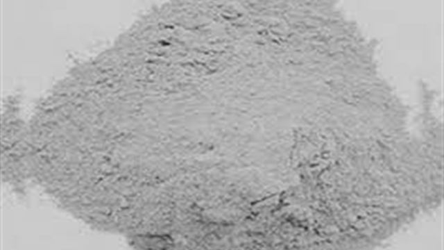
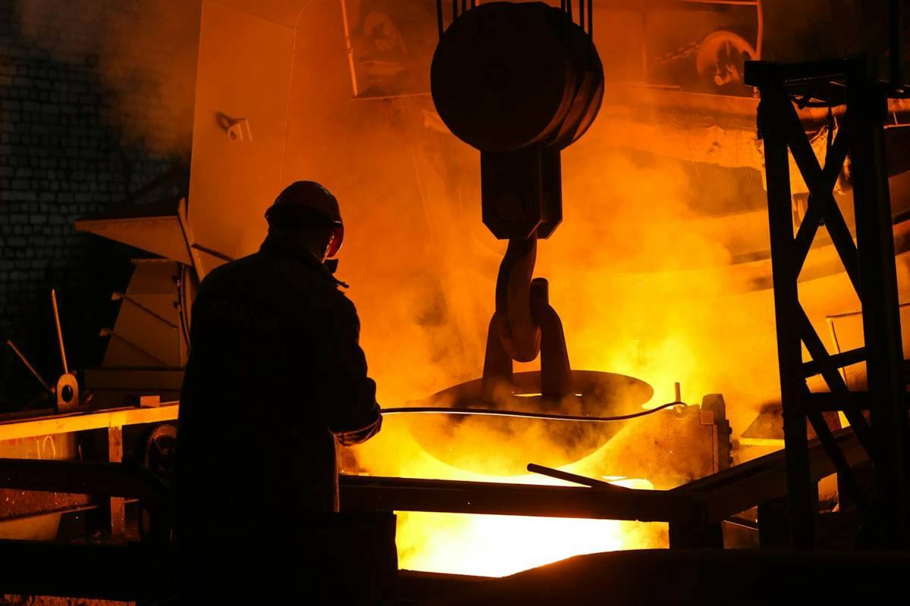

Product specifications
Refractory Castable
Dense alumina castables for wear-prone furnace zones, ladle linings and launders — with predictable installation and heat-up behaviour.

Refractory castable is a monolithic refractory supplied as a dry blend of graded aggregate, matrix fines and a binder, mixed with water on site and cast, pumped or gunned into place. Unlike brick, it forms a jointless lining that follows complex geometry, which removes the joints that are usually the first thing to fail in a furnace or ladle.
Choosing between 60% and 90% alumina
The 60% alumina grade suits general furnace linings, ladle safety linings, launders and covers — areas where thermal and moderate mechanical duty dominate but slag attack is not severe. It is the more economical choice and installs readily.
The 90% alumina grade is specified where service temperature, slag corrosion or mechanical wear are more aggressive: burner blocks, tap-hole surrounds, high-wear ladle zones and areas with direct flame impingement. The higher alumina content raises refractoriness and improves resistance to basic slag attack.
In practice most shops use both — a lower grade for bulk lining volume and a higher grade in the specific zones that drive relining frequency. We help map which zone gets which grade based on your observed wear pattern.
Installation: water addition is the whole game
Water addition is the single largest controllable influence on installed performance. The 5–8% band is not a convenience range — it is a specification. Adding water beyond the upper limit to improve workability increases porosity, drops cold crushing strength and shortens lining life, often dramatically.
Mix with clean potable water in a forced-action mixer for the specified time. Hand mixing rarely achieves proper matrix dispersion and typically produces weaker, more porous castings.
Cast in continuous lifts and vibrate adequately to release entrained air, but do not over-vibrate, which segregates the aggregate from the matrix. Ambient temperature shifts the setting window: hot weather accelerates set and may require chilled water; cold weather retards it and extends the cure before heat-up.
Dry-out and first heat-up
The most common cause of premature castable failure is not the material — it is heating it too fast on first firing. Free water and chemically bound water must leave the lining as vapour through the pore structure. If heating outruns the escape rate, internal steam pressure spalls the hot face away.
A staged heat-up schedule with defined hold periods at the critical dehydration temperatures is essential, and the thicker the lining, the slower the schedule must be. We supply a heat-up curve appropriate to the grade and section thickness with each order.
Allow the specified ambient cure before applying any heat at all. Firing a green casting that has not developed its bond strength wastes both the material and the shift spent installing it.
Typical specifications
The values below are indicative starting points. Every grade we supply is tuned to the customer's process conditions, so treat these as the centre of a range rather than a fixed datasheet.
| Parameter | Typical range |
|---|---|
| Available grades | 60% Al2O3 and 90% Al2O3 |
| Bulk density | 2.20 – 2.90 g/cc |
| Cold crushing strength | > 40 MPa (after curing / firing) |
| Maximum service temperature | 1450 – 1700 °C |
| Water addition | 5% – 8% by weight |
| Initial setting time | 4 – 8 hours (ambient dependent) |
| Shelf life | Up to 6 months in dry storage |
Specifications are indicative and are tuned to each plant's process requirement. Contact us with your operating parameters for a grade-specific datasheet.

Tell us your operating conditions
Send your steel grades, casting speed, section size and the problem you are solving. We will propose a starting grade and a usage plan you can trial.
FAQs
Refractory Castable — frequently asked questions
What is refractory castable used for?
Refractory castable is used to form monolithic, jointless linings in furnaces, ladles, launders, burner blocks and tap-hole surrounds. Because it is cast rather than laid as brick, it follows complex geometry and eliminates the joints that are usually the first area to fail.
What is the difference between 60% and 90% alumina castable?
The 60% alumina grade suits general furnace linings, ladle safety linings and launders where thermal and moderate mechanical duty dominate. The 90% alumina grade is specified for higher service temperature, severe slag corrosion or heavy mechanical wear, such as burner blocks, tap-hole surrounds and high-wear ladle zones.
How much water should be added to refractory castable?
Between 5 and 8 percent by weight, using clean potable water in a forced-action mixer. This is a specification, not a convenience range. Exceeding the upper limit increases porosity, reduces cold crushing strength and significantly shortens lining life.
Why do castable linings fail early?
The most common cause is heating too quickly during first firing. Free and chemically bound water must escape as vapour through the pore structure; if heating outruns that rate, internal steam pressure spalls the hot face. A staged heat-up schedule with holds at critical dehydration temperatures prevents this.
What is the shelf life of refractory castable?
Up to 6 months when stored dry, sealed and off the floor. The binder system is moisture sensitive, so bags exposed to humidity will lose setting performance well before that nominal limit.